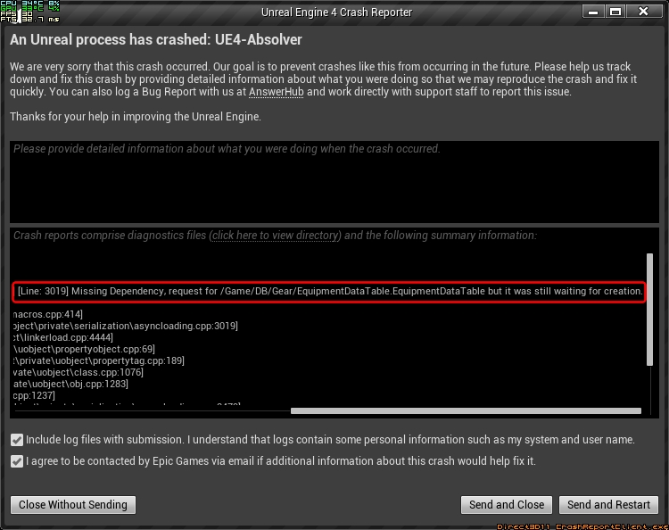

Добавлено:
3 стартовых персонажа , и стилей
Снаряжение в магазине:
- Маска Абзолвера Вершины Башни (требования: Абзолвер) 0
- Одеяние Проводников (450 ) 2100
- Маска Куретца (Абзолвер, 45 ) 5200
- Воротник Куретца (Абзолвер, 20 ) 800
- Доспех Куретца (Абзолвер, 15 ) 3000
- Одежда Куретца (Абзолвер, 50 ) 5200
- Доспехи Каргала (Абзолвер, 25 ) 4500
- Туника Абзолвера (Абзолвер, 35 ) 6000
- Налокотники Пораженного тирана Теары (10 ) 900
- Плечи Пораженного тирана Теары (10 ) 2100
- Туника Пораженного тирана Теары (10 ) 6000
- Перчатки Пораженного тирана Теары (10 ) 900
- Пояс Пораженного тирана Теары (10 ) 900
- Штаны Пораженного тирана Теары (10 ) 3300
- Сапоги Пораженного тирана Теары (10 ) 900
- Доспех Пораженного мудрого проводника (10 ) 6000
- Вешти Пораженного мудрого проводника (10 ) 3300
- Обувь Пораженного мудрого проводника (10 ) 900
- Маска Мастера Орате (Абзолвер, 2000 ) 3000
- Плащ мастера Орате (Абзолвер, 2000 ) 2500
- Рубашка мастера Орате (Абзолвер, 2000 ) 5000
- Одеяние мастера Орате (Абзолвер, 2000 ) 6300
- Браслет мастера Орате (Абзолвер, 2000 ) 1000
- Пояс мастера Орате (Абзолвер, 2000 ) 1200
- Штаны мастера Орате (Абзолвер, 2000 ) 4500
- Туфли мастера Орате (Абзолвер, 2000 ) 1500
- Маска красной сущности (Абзолвер, 1500 ) 6000
- Жилет командира Шабу (Абзолвер, 1500 ) 7500
- Штаны командира Шабу (Абзолвер, 1500 ) 7500
- Маска-лабиринт претендента (Абзолвер, 4500 ) 9000
- Мантия оратианского жреца (Абзолвер, 4500 ) 12000
- Туника оратианского жреца (Абзолвер, 4500 ) 12000
- Штаны оратианского жреца (Абзолвер, 4500 ) 1200
Оружие в магазине:
- Меч с сияющим лезвием (10 ) 6
- Слабое оружие 01 300
- Слабое оружие 02 300
- Слабое оружие 03 300
- Слабое оружие 04 300
Эмоции в магазине:
- One Hand Stiff Bow 10
- Танец радости 15
Приветствия в магазине:
- 19 из
- из Эмоции:
- Ну же!
- Приветствие: поклониться
- Военное приветствие
- Поклон
- One Hand Stiff Bow
Всё за 15
Изменения Приёмов:
- Hook - Теперь доступен в обоих стойках для меча
- Jab Punch - Теперь доступен в обоих стойках для меча
- Parry & Strike - Теперь доступен в обоих стойках для меча
- Straight Punch - Теперь доступен в обоих стойках для меча
- Roll Punch - Теперь доступен в обоих стойках для меча
- Axe Kick - Теперь доступен в обоих стойках для меча
- Spin Back Fist - Теперь доступен в обоих стойках для меча. Изменён хват меча с обратного, на обычный
- Cross Punch - Теперь доступен в обоих стойках для меча
- Roll Uppercut - Теперь доступен в обоих стойках для меча
- Charged Haymaker - Теперь доступен в обоих стойках для меча
- Fast Punch - Теперь доступен в обоих стойках для меча
- Falcon Punch - Теперь доступен в обоих стойках для меча
- Spinning Wide Hook - Теперь доступен в обоих стойках для меча
- Furious Uppercut - Теперь доступен в обоих стойках для меча
- Curled Up Uppercut - Теперь доступен в обоих стойках для меча
- Body Blow - Теперь доступен в обоих стойках для меча
- Cleaver Blow - Теперь доступен в обоих стойках для меча
- Wallop Blow - Теперь доступен в обоих стойках для меча
- Soto-uke - Теперь доступен в обоих стойках для меча
- Crushing Palm - Теперь доступен в обоих стойках для меча
Collar Chop - Больше нельзя использовать вместе с мечём- Rush Shoulder Knock Light - Теперь доступен в отражённой стойке для меча
- Back Tripped Kick - Теперь доступен в обоих стойках для меча
- Stretch Out Hook - Теперь доступен в обоих стойках для меча
- Direct punch - Теперь доступен в обоих стойках для меча
- Chin Palm - Теперь доступен в обоих стойках для меча
- Drunk Crane - Теперь доступен в обоих стойках для меча
- Wrist Jab - Теперь доступен в обоих стойках для меча
- Double Fist Stretch - Теперь доступен в обоих стойках для меча
- Backfall Strike - Теперь доступен в обоих стойках для меча
- Grab Punch - Теперь доступен в обоих стойках для меча
- Spiral Back Punch - Теперь доступен в обоих стойках для меча
- Eye Poke - Теперь доступен в обоих стойках для меча
Donkey Slap - Больше нельзя использовать вместе с мечём- Drunken Paw - Теперь доступен в отражённой стойке для меча
- Gut Punch - Теперь доступен в обоих стойках для меча
- Fast Cross - Теперь доступен в основной стойке для меча
- Temple Knock - Теперь доступен в основной стойке для меча
- Blink Punch - Теперь доступен в обоих стойках для меча
- Rabbit Punch - Теперь доступен в обоих стойках для меча
- Fencing Punch - Теперь доступен в обоих стойках для меча
- Double Wata - Теперь доступен в основной стойке для меча
- Guts Punch - Теперь доступен в обоих стойках для меча
- Run-up Strike - Теперь доступен в обоих стойках для меча
- One Inch Punch - Теперь доступен в обоих стойках для меча
- High Tackle
Был временно отключён, из-за проблем с импортом анимаций. (Планировалось что он будет с 1 ударом и переходом в другую стойку)
- Plexus Elbow
урон 90,24
Затрата выносливости 24,6
Эффект на защиту 90
Подготовка 18
Преим. при ударе 9
Преим. при защите 9
множители:
D
C
E
Доступен в обоих стойках для меча
-
720 triple kick
урон 63
Затрата выносливости 45,6
Эффект на защиту 79
Подготовка 21 отображается с учётом кадров первого удара атаки (16 -> 21)
Преим. при ударе 7
Преим. при защите 3
множители:
D
B
A
Был убран 1-ый удар, из-за чего он теперь атакует всего дважды
(изменённая анимация имеется, но из-за проблем с импортом пока используется обычная)
-
Iron Barragekick
урон 120
Затрата выносливости 25,6
Эффект на защиту 120
Подготовка 24 отображается с учётом кадров первого удара атаки (22 -> 24)
Преим. при ударе 12
Преим. при защите 6
множители:
С
B
C
Были убраны 1-ый и 3-ий удары атаки, из-за чего он теперь атакует всего 1 раз
-
Spe JKD BL Guardbreak
урон 69,7
Затрата выносливости 15,6
Эффект на защиту 51,3
Подготовка 15
Преим. при ударе 9
Преим. при защите 7
Больше нельзя использовать вместе с мечём
множители:
D
E
E
Теперь является останавливающей атакой
-
Spe JKD BL ParryLeft
урон 40
Затрата выносливости 15
Эффект на защиту 10,5
Подготовка 13
Преим. при ударе 7
Преим. при защите 3
Больше нельзя использовать отражённой стойке для меча
множители:
D
A
B
-
Spe JKD BL ParryRight
урон 40
Затрата выносливости 15
Эффект на защиту 10,5
Подготовка 13
Преим. при ударе 7
Преим. при защите 3
Больше нельзя использовать отражённой стойке для меча
множители:
D
A
B
Так-же временно (в качестве костыля)
все вертикальные атаки стали считаться выпадами с средней целью. Это было сделано из-за претензий игроков что задние увороты и могут уворачиваться от вертикальных атак.
Изменения Стилей:
- Длительность эффекта устойчивости у увеличено с 1.5 до 3 секунд
- Восстановление выносливости у снижены с 30 до 25
-
Были возвращены кадры идеальной атаки для уворотов
(Они работают он судя по всему сейчас у них есть ускорение восстановления, из-за чего идеальные атаки на них не очень эффективны)
Так-же восстановление выносливости увеличено с 25 до 35, а от парирования с 10 до 30.
-
Добавлена иконка Стиля Заблудшего Претендента -
Добавлены множители характеристик:
D
B
D
D
A
Изменены атаки с разбега:
Для рук и боевых перчаток используется атака с разбега
А для меча используется атака с разбега (На мой взгляд она лучше подходит для этого стиля)
ЭКСПЕРИМЕНТАЛЬНО:
Окна уворотов, парирования и поглощения, всех стилей было изменено с 5/6/7 кадров на 6 кадров
Так-же начало поглощения у изменилось с 3 на 2 кадр
Изменения Оружия
У всего оружия я добавил множитель урона для , множитель считался средним между и , в пользу последнего.
(Множитель E не даёт бонусов)
- Curved Sword ( - C)
- Dried Essence Shard ( - A)
- River Gladius ( - D)
- Oratian Chokuto ( - A)
- Tear Machete ( - D)
- Moon Pike Sword ( - S)
- Risryn Sword ( - C)
- Barbarian Wargloves ( - D)
- Priest Wargloves ( - S)
- Empire's Hook Wargloves ( - C)
- Bear Claw Wargloves ( - A)
- Ice Grinder Wargloves ( - B)
- Spike Turtle Wargloves ( - C)
- Hand Spirit Wargloves ( - B)
- Low Stat Weapon 01 ( - B - C - C - D - D - C)
- Low Stat Weapon 02 ( - C - B - C - D - B - C)
- Low Stat Weapon 03 ( - D - E - E - B - D - E)
- Low Stat Weapon 04 ( - D - C - B - E - D - B)
- Carpenter Wargloves ( - C)
- Prospector Wargloves ( - C)
- Scholar Sword ( - D)
- Starnight Sword ( - D)
- Tear Tyrant Sword ( - D)
- Witness Sword ( - D)
- HammerKnuks Wargloves ( - C)
- Arcell Sword ( - B)
- Gleam Blade Sword ( - S)
- Gleam Crystal Wargloves ( - B)
Русская локализация
Исправления ошибок в описании предметов:
- Кожаный пояс Патриотов
- Штаны претендента
- Повязка главаря Теары
- Маска патриота
- Туника хранителя Орате
- Майка хранителя Орате
- Перчатки дворянина Фанг-ли
- Маска времени Орате
- Пелерина дворянина Фанг-ли
- Майка дворянина Фанг-ли
- Кожаные напульсники
- Маска с прищуренными глазами
- Пелерина добытчика Сущности
- Перчатки лучника
- Церемониальные сапоги
- Новый пояс Уринга
- Металлические налокотники
- Штаны Теары
- Рубаха собирателя Теары
- Штаны собирателя Теары
- Доспехи вождя Теары
- Шарф Орате
- Повязки заклинателя леса
- Платок заклинателя леса
- Штаны заклинателя леса
- Штаны урингского еретика
- Изогнутый меч
- Боевые перчатки ледяного разрушителя
Так-же исправлены ошибки когда в место Абзолвера писалось Освободитель
Известные баги:
-
Игра может крашится несколько раз при первом запуске и подключении к другому игроку, если в Crash Reporter в 4 строке указывается EquipmentDataTable, то просто попробуйте перезайти.

- У одежды Куретца и Проводника, часть модельки наследует другой Материал.
- Приветствия скипаются если носить китайскую маску.
{kind=link}